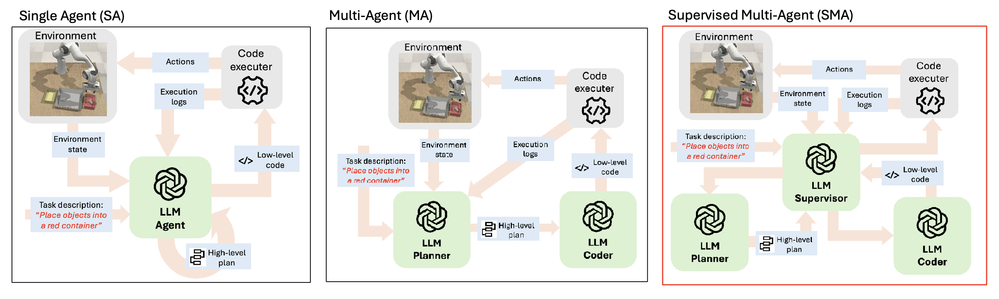
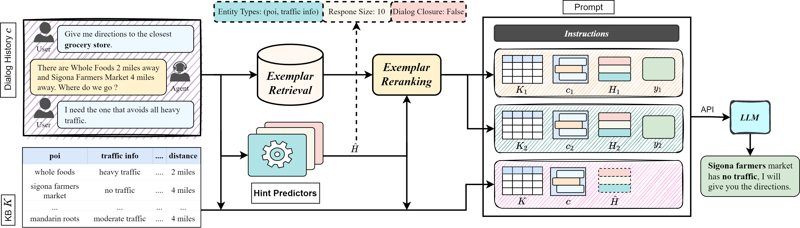
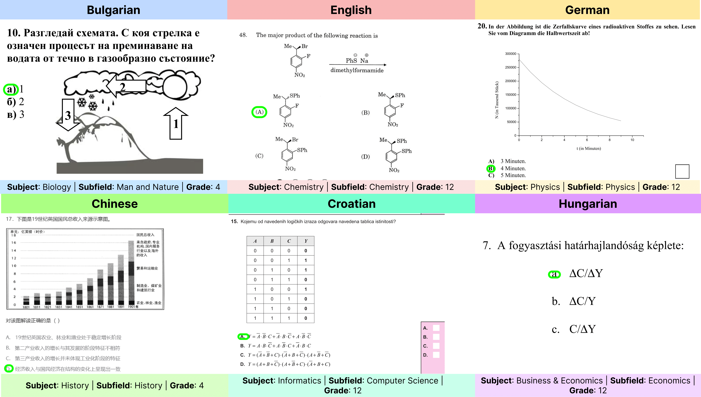

|
Rocktim Jyoti Das I am a Research Associate at MBZUAI in Abu Dhabi working on reasoning and planning under the supervison of Prof. Ivan Laptev and Prof. Preslav Nakov. I am interested in developing agents that reason and interact with the environment to solve complex tasks using the world knowledge acquired using internet scale data. I completed my undergraduate studies at the Indian Institute of Technology, Delhi, which set the foundation for my academic journey. Subsequently, I had the incredible opportunity to spend a year at the DAIR Lab, IIT Delhi as a Project Scientist under the supervision of Prof. Mausam. As a researcher at DAIR lab, I focused on Task-Oriented Dialog Systems and Conversation based Medical Diagnosis. Email / CV / Google Scholar / Twitter / Github |

|
News
|
Selected Research* denotes joint first authors |
|  |
MALMM: Multi-Agent Large Language Models for Zero-Shot Robotics Manipulation
Harsh Singh*, Rocktim Jyoti Das*, Mingfei Han, Preslav Nakov, Ivan Laptev, submitted to ICRA, 2025 |
|  |
Synergizing In-context Learning with Hints for End-to-end Task-oriented Dialog Systems
Vishal Vivek Saley, Rocktim Jyoti Das, Dinesh Raghu, Mausam, accepted in EMNLP main, 2024 |
|  |
EXAMS-V: A Multi-Discipline Multilingual Multimodal Exam Benchmark for Evaluating Vision Language Models
Rocktim Jyoti Das, Simeon Emilov Hristov, Haonan Li, Dimitar Dimitrov, Ivan Koychev, Preslav Nakov, accepted in ACL main, 2024 |

|
Exploring Distributional Shifts in Large Language Models for Code Analysis
Shushan Arakelyan, Rocktim Jyoti Das, Yi Mao, Xiang Ren, accepted in EMNLP main, 2023 |

|
DKAF: KB Arbitration for Learning Task-Oriented Dialog Systems with Dialog-KB Inconsistencies
Vishal Saley, Rocktim Jyoti Das, Dinesh Raghu, Mausam, accepted in ACL Findings, 2023 |
|
Source code from Jon Barron's website. |